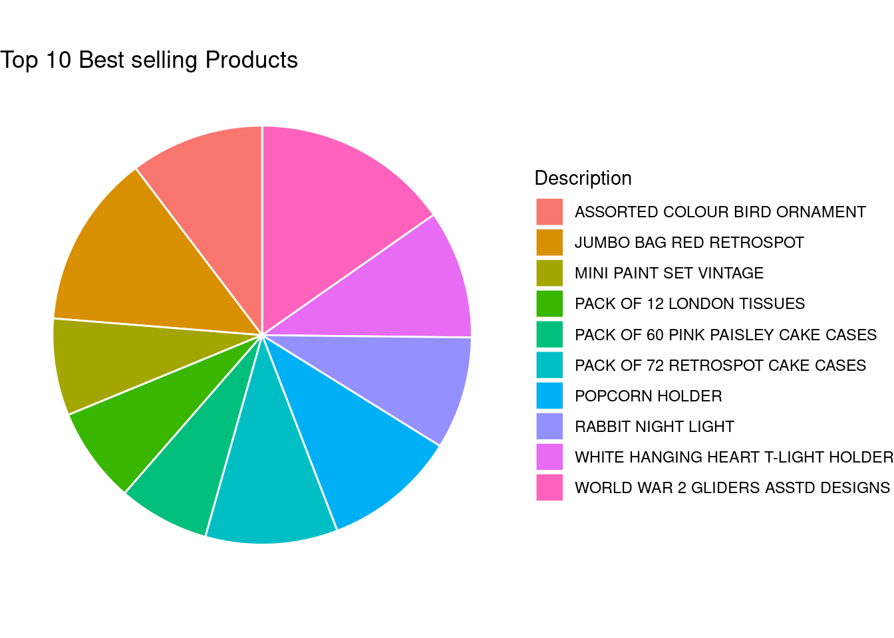

Analysis of Online Retail Data is the most important factor in setting up a successful online business. Unlike offline stores, where footfall can be increased using physical marketing strategies, online stores mainly rely on online advertisements and data analysis for business growth.
While advertisements are key to getting new customers for the stores, data analysis can provide valuable information like top selling products, the best demographic, sales patterns and dead, top stock details. These bits of information can help the management decide the areas in which the business needs investment and which are the products that make the store’s maximum sales.
So, in this project, I have taken a small sample of the transactions of an online retail store and will try to analyse the data and identify some patterns which may help us answer some important business questions.
Attaching package: 'psych'
The following objects are masked from 'package:ggplot2':
%+%, alpha
Code
library(readr)library(summarytools)
Warning: no DISPLAY variable so Tk is not available
system might not have X11 capabilities; in case of errors when using dfSummary(), set st_options(use.x11 = FALSE)
Attaching package: 'summarytools'
The following object is masked from 'package:tibble':
view
The input dataset has 541909 records of goods sold in an online retail store and has 8 columns.
Dataset Summary
The columns and their descriptions are as follows :
InvoiceNo: A 6 digit number which is the invoice number of the transaction in which the item was sold. As there can be multiple items in a transaction, the InvoiceNo column won’t be unique.
StockCode: Item code. A 5-digit integral number uniquely assigned to each product.
Description: Item name.
Quantity: The quantities of the item in the transaction.
InvoiceDate: Invoice Date and time.
UnitPrice: Product price per unit in sterling.
CustomerID: A 5-digit integral number uniquely assigned to each customer.
Country: The name of the country where the customer resides.
Now using the dfSummary method to get the summary of each column in the dataset.
Generated by summarytools 1.0.1 (R version 4.2.2) 2023-02-08
From the summary, we can see that there are 25900 unique invoice numbers, which implies that this data is of 25900 transactions from 2010-12-01 to 2011-12-09 12:50:00. We can also observe that 91.4% of the customers of this store are from the United Kingdom. Moreover, the mean quantity per transaction is 9.6 which indicates that this store is mostly used to cater to bulk ordering needs of the customers.
On reading the item descriptions of some of the items, it is very clear that most of the SKUs in this store are large quantity sets of items. ie.PACK OF 72 RETROSPOT CAKE. This is also an indicator that this store mainly caters to wholesale/bulk orders.
Tidying the dataset
Cleaning the null values
Checking the number of rows that has null data in the dataset.
Code
sum(is.na(retail))
[1] 136534
The total number of N/A values in the dataset is 136534, which is a bit high. Now, we will see whether any specific columns contain the bulk of these values or if the values are distributed across columns.
Only the columns Description and CustomerID have N/A values in them.
Checking the number of rows in each column that has null data.
Code
sum(is.na(retail$Description))
[1] 1454
Code
sum(is.na(retail$CustomerID))
[1] 135080
About 25% of the values in the column CustomerID have N/A values whereas only 0.3% of values in the column Description are N/A. So, we should be careful to form our analysis on Customers and should focus on other fields more.
Also, as there are 25% N/A values in the column CustomerID, we cannot remove the whole column as we still might moss out on important information. So, an important thing to look out for here will be entries with both CustomerID and Description as N/A. We can safely remove the entries if such a condition is met.
Analysing Invoice Numbers and Categorizing Transactions
Let us start our analysis by looking at the InvoiceNo column. This is an important field to be considered because the values in this column are repeated and we will use this field to get data about unique transactions.
Looking at the values of the column, most of the InvoiceNo values are 6 digit integers whereas other values start with either the character A or C. Let us find the count of these values and try to deep dive into the meaning of these.
# Counting the frequency of the first character of the InvoiceNoinvoice_freq <- distinct_invoice_no %>%group_by(InvoiceStart) %>%summarise(total_count=n(),.groups ='drop')invoice_freq
# A tibble: 3 × 2
InvoiceStart total_count
<chr> <int>
1 5 19963
2 A 3
3 C 3836
We can observe from the above analysis that approx. 14.8% of the Invoice No values starts with C, which is a significant number. Now, let us try t find the significance of this count and the starting letters by looking at the data values where the InvoiceNo starts with A and C.
As we can see from the above generated tables, retail.char_invoice_A and retail.char_invoice_C. We notice that the values in which InvoiceNo starts with A are transactions where bad debt is adjusted. Whereas, the values where InvoiceNo starts with C have negative Quantity written in transactions. Which means, that these transactions are not sale transactions, but cancelled transactions in which the goods were returned to the seller.
I will plot this stat in a graph for better understanding
Code
invoice_status <- invoice_freq %>%mutate(Type =case_when( InvoiceStart =="C"~"Cancelled", InvoiceStart =="A"~"Adjust Debt", InvoiceStart =="5"~"Sell", ))ggplot(data = invoice_status, aes(x = Type, y=total_count, fill = Type)) +geom_bar(stat ="identity") +scale_fill_brewer(palette ="Oranges") +ggtitle("Transaction type vs their count") +xlab("Transaction type") +ylab("Count")
Also, let’s add a Type column to the dataset so it would be easier to filter out data if needed.
One more adjustment that I would like to make to the data for future purposes is to split the InvoiceDate column into Year, Month and Day columns.
Code
mutated_retail <- mutated_retail %>%mutate(Year =as.numeric(format(InvoiceDate, format ="%Y"))) %>%mutate(Month =as.numeric(format(InvoiceDate, format ="%m"))) %>%mutate(Day =as.numeric(format(InvoiceDate, format ="%d")))head(mutated_retail)
# A tibble: 6 × 12
InvoiceNo StockC…¹ Descr…² Quant…³ InvoiceDate UnitP…⁴ Custo…⁵ Country
<chr> <chr> <chr> <dbl> <dttm> <dbl> <dbl> <chr>
1 536365 85123A WHITE … 6 2010-12-01 08:26:00 2.55 17850 United…
2 536365 71053 WHITE … 6 2010-12-01 08:26:00 3.39 17850 United…
3 536365 84406B CREAM … 8 2010-12-01 08:26:00 2.75 17850 United…
4 536365 84029G KNITTE… 6 2010-12-01 08:26:00 3.39 17850 United…
5 536365 84029E RED WO… 6 2010-12-01 08:26:00 3.39 17850 United…
6 536365 22752 SET 7 … 2 2010-12-01 08:26:00 7.65 17850 United…
# … with 4 more variables: Type <chr>, Year <dbl>, Month <dbl>, Day <dbl>, and
# abbreviated variable names ¹StockCode, ²Description, ³Quantity, ⁴UnitPrice,
# ⁵CustomerID
Now that we know that there are multiple types of transactions -> Cancelled and Sell, there is one interesting thing that we can do with this data => Calculate the most sought after products (stocks with net quantity > 0 => most bought products) and also the dead stock (stock with net quantity < 0 => the most returned product).
We now have the top selling products and the most returned products for this online store. Now, let us make it look a bit better. First, let’s find out the top 10 products in the store.
Code
top_10_prods <-head(hot_stock, 10)top_10_prods
# A tibble: 10 × 3
# Groups: StockCode [10]
StockCode Description net_quantity
<chr> <chr> <dbl>
1 84077 WORLD WAR 2 GLIDERS ASSTD DESIGNS 53847
2 85099B JUMBO BAG RED RETROSPOT 47359
3 84879 ASSORTED COLOUR BIRD ORNAMENT 36381
4 22197 POPCORN HOLDER 36334
5 21212 PACK OF 72 RETROSPOT CAKE CASES 36039
6 85123A WHITE HANGING HEART T-LIGHT HOLDER 35021
7 23084 RABBIT NIGHT LIGHT 30680
8 22492 MINI PAINT SET VINTAGE 26437
9 22616 PACK OF 12 LONDON TISSUES 26111
10 21977 PACK OF 60 PINK PAISLEY CAKE CASES 24753
Now, let’s put them in a pie chart
Code
top_prods_pie <-ggplot(top_10_prods, aes(x ="", y = net_quantity, fill = Description)) +geom_bar(stat="identity", width=1, color="white") +coord_polar("y", start=0) +theme_void() +labs(title="Top 10 Best selling Products")top_prods_pie

Analysing Country-wise transactions
First I will filter the transactions on the basis of StockCode, so that only the transactions related to products (and not extra fees, postage etc.)
# A tibble: 5 × 2
# Groups: Country [5]
Country n
<chr> <int>
1 United Kingdom 20932
2 Germany 578
3 France 441
4 EIRE 347
5 Belgium 117
Here’s the plot for the same:
Code
transactions_by_country <-ggplot(retail.top_country, aes(x = Country, y = n)) +geom_bar(stat ="identity", fill ="Blue") +theme_minimal() +labs(title="Top 5 Countries by transaction volume", x="Country", y ="No of Transactions")transactions_by_country
Looking at top countries with the maximum number of customers
# A tibble: 5 × 2
# Groups: Country [5]
Country n
<chr> <int>
1 United Kingdom 3944
2 Germany 95
3 France 88
4 Spain 30
5 Belgium 25
Code
customer_by_country <-ggplot(retail.top_country, aes(x = Country, y = n)) +geom_bar(stat ="identity", fill ="Orange") +theme_minimal() +labs(title="Top 5 Countries by Customer volume", x="Country", y ="No of Customers")customer_by_country
Analysis based on total sales
There is another stat we can calculate per country, which is the total sales amount. First, I create another df, which is the
# A tibble: 5 × 2
Country TotalSales
<chr> <dbl>
1 United Kingdom 8301320.
2 Netherlands 283480.
3 EIRE 259663.
4 Germany 200808.
5 France 182163.
Code
sales_by_country <-ggplot(retail.sales_by_country, aes(x = Country, y = TotalSales)) +geom_bar(stat ="identity", fill ="Maroon") +theme_minimal() +labs(title="Top 5 Countries by Sales", x="Country", y ="Sales")sales_by_country
ggplot(data=retail.monthly_sales, aes(x=Month, y=Sales)) +geom_bar(stat="identity") +theme_minimal() +labs(title="Monthly Sales", x="Month", y ="Sales")
We can see from the bar plot that the sales are highest during the months of November and December, which can be accounted for by the holiday season.
Code
head(retail.total_sales)
# A tibble: 6 × 13
InvoiceNo StockC…¹ Descr…² Quant…³ InvoiceDate UnitP…⁴ Custo…⁵ Country
<chr> <chr> <chr> <dbl> <dttm> <dbl> <dbl> <chr>
1 536365 85123A WHITE … 6 2010-12-01 08:26:00 2.55 17850 United…
2 536365 71053 WHITE … 6 2010-12-01 08:26:00 3.39 17850 United…
3 536365 84406B CREAM … 8 2010-12-01 08:26:00 2.75 17850 United…
4 536365 84029G KNITTE… 6 2010-12-01 08:26:00 3.39 17850 United…
5 536365 84029E RED WO… 6 2010-12-01 08:26:00 3.39 17850 United…
6 536365 22752 SET 7 … 2 2010-12-01 08:26:00 7.65 17850 United…
# … with 5 more variables: Type <chr>, Year <dbl>, Month <dbl>, Day <dbl>,
# TotalSales <dbl>, and abbreviated variable names ¹StockCode, ²Description,
# ³Quantity, ⁴UnitPrice, ⁵CustomerID
Reflection
Being inexperienced in the field of data science, I feel I have learned a lot by partaking in this course and doing this project.
My initial intention was to choose a sports dataset to analyse when I started this project. But, I went on with this dataset after having a look at it because of it’s simplicity. This very simplicity in this dataset meant that it wasn’t going to be easy to find categories in this dataset. After completing this analysis I still feel that had there been some more additional data to this set, there was a lot of information that could be extracted from the data. One such example is if we had the Categories of the products available, it would’ve led us to a lot of new information about sales trends for the categories. More information about the customers would’ve also been helpful.
For this project, I approached the analysis problem by looking at each column individually and trying to extract as much data/trends from the column as I could. After that I tried to couple these trends and get some relevant information.
I faced many challenges in this project and the class tutorials as well as online resources like the R documentation and the documentation of libraries like ggplot2 helped a lot.
I believe that I still have a lot to learn about Data Science, but this course has been a wonderful first step into the field and will immensely help me in this journey.
Bibliography
Dataset from Kaggle- https://www.kaggle.com/datasets/ulrikthygepedersen/online-retail-dataset
Wickham, H., & Grolemund, G. (2016). R for data science: Visualize, model, transform, tidy, and import data. OReilly Media.
Wickham, H. (2010). A layered grammar of graphics. Journal of Computational I and Graphical Statistics, 19(1), 3-28.
Source Code
---title: "Final Project"author: "Siddharth Goel"desription: "Final Project on Online Retail Data"date: "02/02/2023"format: html: toc: true code-fold: true code-copy: true code-tools: true---## IntroductionAnalysis of Online Retail Data is the most important factor in setting up a successful online business. Unlike offline stores, where footfall can be increased using physical marketing strategies, online stores mainly rely on online advertisements and data analysis for business growth.While advertisements are key to getting new customers for the stores, data analysis can provide valuable information like top selling products, the best demographic, sales patterns and dead, top stock details. These bits of information can help the management decide the areas in which the business needs investment and which are the products that make the store's maximum sales.So, in this project, I have taken a small sample of the transactions of an online retail store and will try to analyse the data and identify some patterns which may help us answer some important business questions.```{r}library(tidyverse)library(ggplot2)library(dplyr)library(psych)library(readr)library(summarytools)library(stringr)knitr::opts_chunk$set(echo =TRUE, warning=FALSE, message=FALSE)```## Import the DataImporting the online retail dataset```{r}retail <- readr::read_csv("_data/online_retail.csv")head(retail)spec(retail)dim(retail)```The input dataset has 541909 records of goods sold in an online retail store and has 8 columns.## Dataset SummaryThe columns and their descriptions are as follows :1. InvoiceNo: A 6 digit number which is the invoice number of the transaction in which the item was sold. As there can be multiple items in a transaction, the InvoiceNo column won't be unique.2. StockCode: Item code. A 5-digit integral number uniquely assigned to each product.3. Description: Item name.4. Quantity: The quantities of the item in the transaction.5. InvoiceDate: Invoice Date and time.6. UnitPrice: Product price per unit in sterling.7. CustomerID: A 5-digit integral number uniquely assigned to each customer.8. Country: The name of the country where the customer resides.Now using the `dfSummary` method to get the summary of each column in the dataset.```{r}print(dfSummary(retail, varnumbers =FALSE, plain.ascii =FALSE, style ="grid", graph.magnif =0.70, valid.col=TRUE),method='render', table.classes='table-condensed')```From the summary, we can see that there are 25900 unique invoice numbers, which implies that this data is of 25900 transactions from 2010-12-01 to 2011-12-09 12:50:00. We can also observe that 91.4% of the customers of this store are from the United Kingdom. Moreover, the mean quantity per transaction is 9.6 which indicates that this store is mostly used to cater to bulk ordering needs of the customers.On reading the item descriptions of some of the items, it is very clear that most of the SKUs in this store are large quantity sets of items. ie.`PACK OF 72 RETROSPOT CAKE`. This is also an indicator that this store mainly caters to wholesale/bulk orders.## Tidying the dataset### Cleaning the null valuesChecking the number of rows that has null data in the dataset.```{r}sum(is.na(retail))```The total number of `N/A` values in the dataset is 136534, which is a bit high. Now, we will see whether any specific columns contain the bulk of these values or if the values are distributed across columns.```{r}na_cols <-colSums(is.na(retail))colnames(retail) [na_cols >0]```Only the columns `Description` and `CustomerID` have `N/A` values in them.Checking the number of rows in each column that has null data.```{r}sum(is.na(retail$Description))sum(is.na(retail$CustomerID))```About 25% of the values in the column CustomerID have N/A values whereas only 0.3% of values in the column Description are N/A. So, we should be careful to form our analysis on Customers and should focus on other fields more. Also, as there are 25% N/A values in the column CustomerID, we cannot remove the whole column as we still might moss out on important information. So, an important thing to look out for here will be entries with both CustomerID and Description as N/A. We can safely remove the entries if such a condition is met.```{r}retail.cust_desc_null <- retail %>%filter(is.na(CustomerID), is.na(Description), .preserve =TRUE)head(retail.cust_desc_null)count(retail.cust_desc_null)```An interesting thing we see here is that the `UnitPrice` is also `0` when `Description` and `CustomerID` columns are `N/A`.To verify this, let us count the values which meet all 3 conditions```{r}retail %>%filter(is.na(CustomerID), is.na(Description), UnitPrice ==0, .preserve =TRUE) %>% count```The counts match, which means it will be safe to delete the entries which match all the three conditions.```{r}mutated_retail <- retail %>%subset(!(is.na(CustomerID) &is.na(Description) & UnitPrice ==0))head(mutated_retail)nrow(mutated_retail)```We can similarly drop all those records with a N/A CustomerID and UnitPrice 0```{r}mutated_retail <- retail %>%subset(!(is.na(CustomerID) & UnitPrice ==0))head(mutated_retail)```## Processing and Visualization### Analysing Invoice Numbers and Categorizing TransactionsLet us start our analysis by looking at the InvoiceNo column. This is an important field to be considered because the values in this column are repeated and we will use this field to get data about unique transactions.Looking at the values of the column, most of the `InvoiceNo` values are 6 digit integers whereas other values start with either the character `A` or `C`. Let us find the count of these values and try to deep dive into the meaning of these.```{r}distinct_invoice_no <-distinct(mutated_retail, InvoiceNo, .keep_all =TRUE)distinct_invoice_no['InvoiceStart'] <-substr(distinct_invoice_no$InvoiceNo, 0, 1)unique(distinct_invoice_no$InvoiceStart)# Counting the frequency of the first character of the InvoiceNoinvoice_freq <- distinct_invoice_no %>%group_by(InvoiceStart) %>%summarise(total_count=n(),.groups ='drop')invoice_freq```We can observe from the above analysis that approx. 14.8% of the Invoice No values starts with `C`, which is a significant number. Now, let us try t find the significance of this count and the starting letters by looking at the data values where the InvoiceNo starts with `A` and `C`.```{r}retail.char_invoice_A <- mutated_retail %>%filter(startsWith(InvoiceNo, 'A'))retail.char_invoice_C <- mutated_retail %>%filter(startsWith(InvoiceNo, 'C'))head(retail.char_invoice_A)head(retail.char_invoice_C)```As we can see from the above generated tables, retail.char_invoice_A and retail.char_invoice_C. We notice that the values in which InvoiceNo starts with A are transactions where bad debt is adjusted. Whereas, the values where InvoiceNo starts with C have negative Quantity written in transactions. Which means, that these transactions are not sale transactions, but cancelled transactions in which the goods were returned to the seller.I will plot this stat in a graph for better understanding```{r}invoice_status <- invoice_freq %>%mutate(Type =case_when( InvoiceStart =="C"~"Cancelled", InvoiceStart =="A"~"Adjust Debt", InvoiceStart =="5"~"Sell", ))ggplot(data = invoice_status, aes(x = Type, y=total_count, fill = Type)) +geom_bar(stat ="identity") +scale_fill_brewer(palette ="Oranges") +ggtitle("Transaction type vs their count") +xlab("Transaction type") +ylab("Count")```Also, let's add a Type column to the dataset so it would be easier to filter out data if needed.```{r}mutated_retail <- mutated_retail %>%mutate(Type =case_when(startsWith(InvoiceNo,'C') ~"Cancelled",startsWith(InvoiceNo,'A') ~"AdjustDebt",startsWith(InvoiceNo,'5') ~"Sale", ))unique(mutated_retail$Type)head(mutated_retail)```One more adjustment that I would like to make to the data for future purposes is to split the `InvoiceDate` column into `Year`, `Month` and `Day` columns.```{r}mutated_retail <- mutated_retail %>%mutate(Year =as.numeric(format(InvoiceDate, format ="%Y"))) %>%mutate(Month =as.numeric(format(InvoiceDate, format ="%m"))) %>%mutate(Day =as.numeric(format(InvoiceDate, format ="%d")))head(mutated_retail)```Now that we know that there are multiple types of transactions -> Cancelled and Sell, there is one interesting thing that we can do with this data => Calculate the most sought after products (stocks with net quantity > 0 => most bought products) and also the dead stock (stock with net quantity < 0 => the most returned product).```{r}retail.quantity <- mutated_retail %>%filter(str_detect(substr(StockCode, 1, 1), '^[0-9]')) %>%group_by(StockCode, Description) %>%summarise(net_quantity =sum(Quantity))hot_stock <- retail.quantity %>%arrange(desc(net_quantity))hot_stockdead_stock <- retail.quantity %>%arrange(net_quantity)dead_stock```We now have the top selling products and the most returned products for this online store. Now, let us make it look a bit better. First, let's find out the top 10 products in the store.```{r}top_10_prods <-head(hot_stock, 10)top_10_prods```Now, let's put them in a pie chart```{r}top_prods_pie <-ggplot(top_10_prods, aes(x ="", y = net_quantity, fill = Description)) +geom_bar(stat="identity", width=1, color="white") +coord_polar("y", start=0) +theme_void() +labs(title="Top 10 Best selling Products")top_prods_pie```### Analysing Country-wise transactionsFirst I will filter the transactions on the basis of StockCode, so that only the transactions related to products (and not extra fees, postage etc.)```{r}retail.product_transactions <- mutated_retail %>%filter(str_detect(substr(StockCode, 1, 1), '^[0-9]'))head(retail.product_transactions)```Now, let us find the top 5 countries with maximum transactions```{r}retail.transactions_by_country <- retail.product_transactions %>%group_by(Country, InvoiceNo) %>% countretail.transactions_by_country <-subset(retail.transactions_by_country, select =-c(n))retail.transactions_by_country <- retail.transactions_by_country %>%group_by(Country) %>% count %>%arrange(desc(n))retail.top_country <-head(retail.transactions_by_country, 5)retail.top_country```Here's the plot for the same:```{r}transactions_by_country <-ggplot(retail.top_country, aes(x = Country, y = n)) +geom_bar(stat ="identity", fill ="Blue") +theme_minimal() +labs(title="Top 5 Countries by transaction volume", x="Country", y ="No of Transactions")transactions_by_country```Looking at top countries with the maximum number of customers```{r}retail.customers_by_country <- retail.product_transactions %>%group_by(Country, CustomerID) %>% countretail.customers_by_country <-subset(retail.customers_by_country, select =-c(n))retail.customers_by_country <- retail.customers_by_country %>%group_by(Country) %>% count %>%arrange(desc(n))retail.top_country <-head(retail.customers_by_country, 5)retail.top_country``````{r}customer_by_country <-ggplot(retail.top_country, aes(x = Country, y = n)) +geom_bar(stat ="identity", fill ="Orange") +theme_minimal() +labs(title="Top 5 Countries by Customer volume", x="Country", y ="No of Customers")customer_by_country```### Analysis based on total salesThere is another stat we can calculate per country, which is the total sales amount.First, I create another df, which is the ```{r}retail.total_sales <- retail.product_transactions %>%mutate(TotalSales = Quantity * UnitPrice)retail.sales_by_country <- retail.total_sales %>%group_by(Country) %>%summarise(TotalSales =sum(TotalSales)) %>%arrange(desc(TotalSales)) %>%head(5)retail.sales_by_country``````{r}sales_by_country <-ggplot(retail.sales_by_country, aes(x = Country, y = TotalSales)) +geom_bar(stat ="identity", fill ="Maroon") +theme_minimal() +labs(title="Top 5 Countries by Sales", x="Country", y ="Sales")sales_by_country```We will look at the sales per month now```{r}retail.monthly_sales <- retail.total_sales %>%group_by(Year, Month) %>%summarise(Sales =sum(TotalSales))retail.monthly_sales``````{r}ggplot(data=retail.monthly_sales, aes(x=Month, y=Sales)) +geom_bar(stat="identity") +theme_minimal() +labs(title="Monthly Sales", x="Month", y ="Sales")```We can see from the bar plot that the sales are highest during the months of November and December, which can be accounted for by the holiday season.```{r}head(retail.total_sales)```## ReflectionBeing inexperienced in the field of data science, I feel I have learned a lot by partaking in this course and doing this project.My initial intention was to choose a sports dataset to analyse when I started this project. But, I went on with this dataset after having a look at it because of it's simplicity. This very simplicity in this dataset meant that it wasn't going to be easy to find categories in this dataset. After completing this analysis I still feel that had there been some more additional data to this set, there was a lot of information that could be extracted from the data. One such example is if we had the Categories of the products available, it would've led us to a lot of new information about sales trends for the categories. More information about the customers would've also been helpful.For this project, I approached the analysis problem by looking at each column individually and trying to extract as much data/trends from the column as I could. After that I tried to couple these trends and get some relevant information.I faced many challenges in this project and the class tutorials as well as online resources like the R documentation and the documentation of libraries like ggplot2 helped a lot. I believe that I still have a lot to learn about Data Science, but this course has been a wonderful first step into the field and will immensely help me in this journey.## BibliographyDataset from Kaggle- https://www.kaggle.com/datasets/ulrikthygepedersen/online-retail-datasetGGPlot2 Documentation - https://ggplot2.tidyverse.org/reference/Wickham, H., & Grolemund, G. (2016). R for data science: Visualize, model, transform, tidy, and import data. OReilly Media.Wickham, H. (2010). A layered grammar of graphics. Journal of Computational I and Graphical Statistics, 19(1), 3-28.